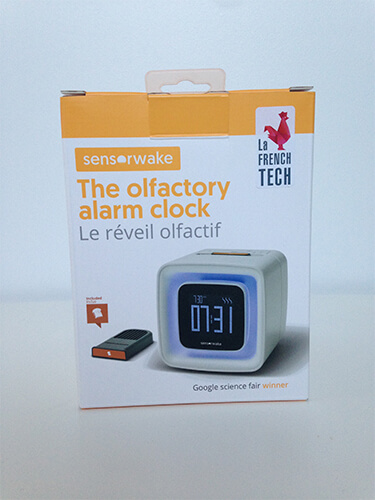

Vous pourrez voir ces caractéristiques.

La boite du SensoWake contient les éléments suivant :
- Un réveil olfactif SensorWake
- Un câble d’alimentation
- Une fiche technique de présentation du réveil olfactif SensorWake
- Une capsule senteur pain grillé (fournie par défaut avec le réveil)
- Une fiche d’utilisation de la capsule/recharge. Vous y trouverez notamment des instructions sur la conservation des capsules SensorWake.
Les plus
- Le marketing du produit, qui donne envie d’essayer toutes les capsules
- Les capsules 100% recyclées
Les "moins"
- Faible diffusion de l’odeur, qui ne nous réveille pas
- L’odeur chimique des capsules testées (pain grillé et croissant)
- Rapport qualité/prix / Obligation d’acheter des capsules
Ce produit coute 99,00euros